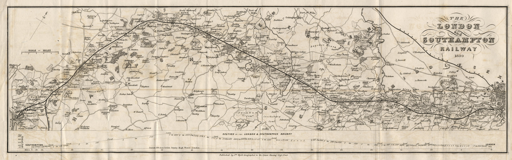

Hook Railway Station opened on 2 July 1883 — forty-four years after the railway line was laid straight through the middle of Hook without bothering to stop. That gap tells you everything about Hook's place in the world at the time: a scattered rural parish, bypassed by the London & South Western Railway's express ambitions, watching trains thunder past on their way to somewhere more important. When the station finally arrived, it wasn't suburban commuters who demanded it. It was local landowners who wanted a way to move agricultural goods.
(Hook Parish Council)
Line Opened10 June 1839
Station Opened2 July 1883
Station CodeHOK
Current OperatorSouth Western Railway
The 44-Year Wait
The London & South Western Railway's line through Hook opened for passenger traffic on 10 June 1839, part of the broader London to Southampton route that connected the capital with key southern ports.
(Wikipedia)
Hook sat on the route, but only geographically. The LSWR was building for speed — express services to the coast, not local stops. Stations were expensive: platforms, buildings, staff, sidings. Hook was a rural parish of scattered farms and coaching houses serving the London Road. It had no compelling commercial case.
So the line was built through Bartley Heath, cutting the landscape in half, and trains simply didn't stop. For decades, Hook remained a coaching village — establishments like the White Hart and the Crooked Billet still serving the turnpike traffic — while locomotives roared past carrying passengers and freight between London and the coast.
What changed wasn't suburban expansion — it was pressure from local landowners. In the 1870s and 1880s, they mounted a sustained campaign to secure a station at Hook, petitioning the LSWR for infrastructure investment. Their motivation was agricultural: they needed efficient transport for produce, livestock, and goods. The Hampshire countryside was productive, but without rail access, Hook was at a commercial disadvantage.
(Hook Parish Council)
The campaign succeeded. Hook Station opened on 2 July 1883 — a modest design typical of LSWR architecture, with two platforms flanking two tracks, basic buildings constructed from local brick and timber. Situated 42 miles 13 chains (67.9 km) from London Waterloo, it was positioned between Winchfield to the northeast and Basingstoke to the southwest. A minor intermediate stop on a busy main line, serving a village that had waited 44 years to be acknowledged.
London & South Western Railway (LSWR)
The LSWR was one of Britain's major Victorian railway companies, operating routes from London Waterloo to Southampton, Salisbury, Exeter, and beyond. It was known for speed and engineering ambition, including the construction of difficult cuttings and embankments across chalk downland and clay. The LSWR was absorbed into the Southern Railway in 1923 during the "Grouping" of Britain's railways.

"The London & Southampton Railway 1839" — This map shows the railway line through Hook in the year it opened for passenger traffic, 10 June 1839. Hook is visible along the route (center), but without a station. The line ran straight through the parish for 44 years before local landowners successfully campaigned for a stopping service in 1883. The topographic detail and section profile below reveal the engineering challenge of building across Hampshire's varied terrain. (Click map to enlarge)
Map scanned and digitized by Jean Norgate. Documentation by Martin Norgate.
Via Old Hampshire Mapped.
Used with permission for non-commercial educational purposes.
Expansion and War
In the early 20th century, traffic on the South West Main Line grew rapidly, and the LSWR undertook a major infrastructure upgrade. Between 1901 and 1904, the tracks between Woking and Basingstoke were quadrupled — expanded from two to four parallel lines. Hook Station's two platforms were repositioned to flank all four tracks: the outer tracks serve stopping trains (accessible from each platform), while the two inner tracks carry express services that pass straight through without stopping. This arrangement persists today.
Hook Station's four-track configuration, visible from the footbridge — two outer platforms serve stopping trains to London Waterloo and Basingstoke, while the two inner tracks carry express services that still thunder through without stopping, exactly as designed in the 1901-1904 expansion. The layout embodies Hook's dual identity: a place trains stop, and a place trains pass through.
During the Second World War, on an unspecified date in 1940, a German bomb landed on the tracks a short distance from Hook station. Six soldiers from the Royal Engineers were ordered to defuse and dispose of it to prevent disruption to the main line. While excavating the unexploded bomb, it detonated, killing all six and injuring their sergeant.
(Basingstoke Gazette)
A memorial plaque commemorating the soldiers was reportedly installed near the site, close to a railway tunnel north of the station — a quiet reminder of the railway's role in wartime logistics and the cost of keeping the lines running.
What It Changed
The station didn't just move agricultural goods — it changed what Hook was. Once the infrastructure existed, commuting became possible. Land values shifted. Housing development accelerated. The coaching trade, already in decline with the rise of railways elsewhere, faded further as passengers chose the train over the road. Hook began its slow transformation from agricultural parish to residential suburb.
This pattern repeated across southern England: railways created commuter belts, and villages became towns. What's striking about Hook is the sequence. The station came first for agriculture, and commuting followed as a secondary effect. That 44-year gap between line and station marks Hook as a place that had to wait its turn, that grew into its infrastructure rather than being designed around it.
Today, the station remains central to Hook's identity. South Western Railway operates semi-fast and stopping services every 30 minutes in each direction, with typical journey times of 50 minutes to London Waterloo and 10 minutes to Basingstoke. In the year ending March 2024, the station recorded 487,728 passenger entries and exits, ranking it as the 876th busiest among Great Britain's 2,586 stations.
(Office of Rail and Road)
The Victorian station building from 1883 is still there, overlaid with modern signage and ticket barriers, but the basic function hasn't changed. It's still the way out, and the way back.
Visiting Today
Hook Station is at Station Approach, Hook, RG27 9HS. The station building dates to its opening in 1883.
(Hook Parish Council)
It's staffed Monday to Friday 06:10-13:00 and Saturdays 08:00-12:00, with self-service ticket machines available at all times. There are 157 car parking spaces, bicycle storage for 24 cycles, toilets on Platform 1 (accessible with baby changing), and step-free access from the main entrance directly to Platform 1 (London-bound services).
Platform 2 (Basingstoke-bound services) is accessible via a ramp from the adjacent supermarket car park. The inner pair of tracks — the fast lines added during the 1901-1904 quadrupling — still carry non-stopping express services past the platforms, exactly as designed over a century ago.
Line opened 10 June 1839; station opened 2 July 1883 — a 44-year gap.
Why the 44-year gap?
Hook was too rural to justify a station in 1839. Local landowners campaigned in the 1870s-1880s for agricultural goods transport, and the LSWR finally agreed.
What happened during WWII?
In 1940, six Royal Engineers were killed defusing a German bomb near the station. A memorial plaque commemorates them.
When did it expand?
1901-1904: LSWR quadrupled the tracks from Woking to Basingstoke. Hook's line was expanded from 2 to 4 tracks, with 2 platforms flanking all four.